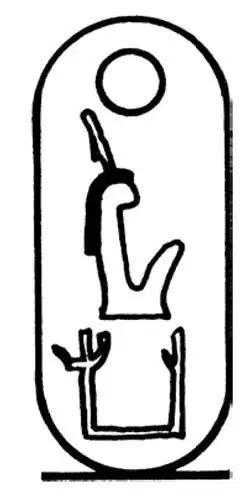
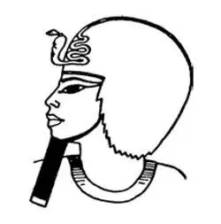
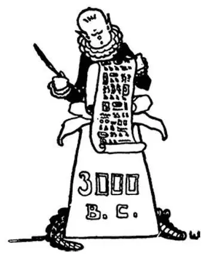

06
The Puzzle Writers in Egypt
埃及之谜的作者

EGYPT was one of the first places where people began to write. The Egyptians did not write with letters like ours, but with signs that looked like little pictures—a lion, a spear, a bird, a whip. This picture-writing was called hieroglyphics—see if you can say hi-er-o-glyph-ics . Perhaps you have seen, in the puzzle sections of a newspaper, stories written in pictures for you to guess the meaning. Well, hieroglyphics were something like that.
Here is the name of an Egyptian queen written in hieroglyphics. You would never guess her name from this funny writing. Her name was Hatshepsut. Can you say it? It's not as hard as it looks at first. Hat SHEP sut . She was the first woman ruler known to history.
A king's or queen's name always had a line drawn around it, like the one you see around the name of Hatshepsut, in order to mark it more prominently and give it more importance. It was something like the frame that we put around a fine picture to make it look better where it hangs on the wall.

Hatshepsut in
hieroglyphic writing
用象形文字写成的
哈特谢普苏特
There was no paper in those days and so the Egyptians wrote on the stalks of a plant called papyrus that grew in the water. They pressed the thick stalks until they were thin and flat and looked like paper. It is from this name papyrus that we get the name paper. Can you see that paper and papyrus look and sound something alike? The Egyptians’ books were written by hand, of course, but they had no pencils nor pens nor ink with which to write. For a pen they used a reed, split at the end, and for ink a mixture of water and soot.
Their books were not made of separate pages like our books, but from long sheets of papyrus pasted together. This was rolled up to form what was called a scroll, something like a roll of wallpaper, and was read as it was unrolled.
Stories of their kings and battles and great events in their history they used to write on the walls of their buildings and monuments. This writing they carved into the stone, so that it would last much longer than that on the papyrus leaves.
All the old Egyptians, who wrote in hieroglyphics and knew how to read this writing, had died long since, and for a great many years no one knew what such writing meant. But a man found out by accident how to read and understand hieroglyphics once again. This is the way he happened to do so.
The Nile separates into different streams before it flows into the Mediterranean Sea. At the mouth of one of these streams is a port called Rosetta.
One day some soldiers were digging near Rosetta when they found a stone, something like a tombstone with three kinds of writing on it. The top writing was in pictures, which we now call hieroglyphics, and no one understood what it meant. Below this was written what was supposed to be the same story in the Greek language, and a great many people do understand Greek. All one had to do, therefore, to find out the meaning of the hieroglyphics, was to compare the two writings. It was like reading secret writing when we know what the letters stand for. You may have tried to solve a puzzle in the back of your magazine, and this was just such an interesting puzzle, only there was no one to tell the answers.
The puzzle was not as easy as it sounds, however, for it took a clever man almost twenty years to solve it. That is a long time for anyone to spend in trying to solve a puzzle, isn't it? But after this key to the puzzle was found, men were able to read all of the hieroglyphics in Egypt and so to find out what happened in that country long ago.
This stone is called the Rosetta Stone. It is now in the great British Museum in London and is very famous, because from it we were able to learn so much history that we otherwise would not have known.
We know that Egypt was a fine place to live. It was chiefly on account of a habit of the river Nile—a bad habit you might at first think it—a habit of flooding the country once a year.
It rained so hard that the water filled up the river Nile, overflowed its banks, and spread water and mud far out over the land, but not very deep.
The people knew when the overflow was coming. They invented a calendar to keep track of it. After most of the water dried up, it left a layer of rich, dark, moist earth over the whole valley. This was a natural fertilizer, like compost that some of your families may use in your own gardens. This fertile soil made it easy to grow dates, wheat, and other good things to eat.
We know also that Egypt was ruled by a king who was called a pharaoh. The first Egyptian king whose name we know was Menes. He came from southern Egypt and conquered the north. He united the country under his rule. He also declared that he was a god. So Egyptians believed that they should obey him both because he was king and because he was a god. Menes lived around 3100 B.C.
People in Egypt were divided into classes. Children in each class usually became what their parents had been. Only a very few ever got to move up.

Menes, 3100 B.C.
美尼斯，公元前3100年
The highest class of people were called priests. They were not like priests or ministers of a church nowadays, however, for there was no church at that time. The priests made the religion and rules, which everyone had to obey as everybody does the laws of our land.
The priests were not only priests; they were doctors and lawyers and engineers, as well. They were the best-educated class, and they were the only people who knew how to read and write, for it was very difficult, as you might suppose, to learn how to read and write hieroglyphics.
The next highest class to the priests were the soldiers, and below these were the lower classes—farmers, shepherds, shopkeepers, merchants, mechanics, and last of all the swineherds.
The Egyptians did not worship one God as we do. They believed in hundreds of gods and goddesses, and they had a special god for every sort of thing, who ruled over and had charge of that thing—a god of the farms, a god of the home, and so on. Some of their gods were good and some were bad, but the Egyptians prayed to them all.
Osiris was the chief god, and Isis was his wife. Osiris was the god of farming and judge of the dead. Their son, Horus, had the head of a falcon.
Many of their gods had bodies of men with heads of animals, animals they thought sacred. The dog and the cat were sacred animals. The ibis, which is a bird like a stork, was another. Then there was the beetle, which was called a scarab. If anyone killed a sacred animal he was put to death, for the Egyptians thought it much worse to kill a sacred and holy creature than to kill even a human being.
【中文阅读】
埃及是最早开始使用文字的地区之一。埃及人并不像我们一样使用字母，而是用看起来像小型图画一样的符号——狮子、长矛、鸟、鞭子等。这种图画似的文字被称为象形文字——你来读读“象形文字”看。或许你曾经在报纸上的猜谜栏看过，有些用图画写成的故事让你来猜其中的意思。是啊，象形文字和那差不多。
这张图（参见第30页图）就是用象形文字写成的一位埃及女王的名字。从这 种可笑的书写上，你永远也猜不出她的名字。她的名字叫哈特谢普苏特。你能读出来吗？其实它并不像最初看上去那么难读。“哈特—谢普—苏特”，分开读就容易了。她是历史上为人熟知的第一位女王。
就像你看到的，哈特谢普苏特的名字周围圈了一道线，国王或女王名字的四周总是画了一条线，这是为了使它显得更突出更重要。正如为了让一幅精美的画挂在墙上显得更好看，我们就给它加上画框是一样的。
当时还没有纸，所以埃及人就把字写在一种植物的茎秆上，这种植物叫纸莎草，生长在水中。他们不断按压纸莎草厚实的茎秆，直到它们变得像纸一样又平又薄。“纸”这个词正是我们从“纸莎草”的名字借用来的。你能看出来英语中“paper”和“papyrus”这两个词不仅拼写，而且读音也很相似吗？当然，埃及的书都是手写的，但他们没有我们书写用的铅笔和钢笔，也没有墨水。他们将芦苇秆一端做成笔，将烟灰和水和在一起当墨水。
他们的书也不像我们现在的书这样一页一页组合而成，而是将长长的一张张纸莎草片粘在一起而做成的。将它们卷起来就成了所谓的卷轴，有点像一卷墙纸，展开就可以读。
埃及人曾经将他们历史中有关于他们的国王、战争和重大事件的故事写在他们建筑物的墙上和纪念碑上。这里说的写是指刻在石头上，这样就比写在纸莎草上会保存更长时间。
所有那些会写会读这种象形文字的古埃及人都早已死了，很长一段时间里没有人懂这种文字的意思。不过，有个人偶然间发现了如何阅读和理解象形文字。下面就是事情的经过。
尼罗河在流入地中海之前有好几条不同的支流，其中一条支流的入海口有一个叫罗塞塔的海港。
有一天，几个士兵正在罗塞塔附近挖掘，突然发现了一块石头，有点像墓碑，上面刻了三种文字。最上面的文字是我们称为象形文字的那种图画，没人知道它的意思。下面刻着希腊文，它的内容据推测和上面象形文字一样，而现在很多人都懂希腊语。因此，要想读懂这段象形文字，所要做的就是比较这两种文字。当我们知道这些字母表示什么意思的时候，这就像读懂密码文字一样。你或许曾试图解开你杂志背面的谜题，解读这些象形文字也同样是个有趣的谜题游戏，只不过没有人公布答案。
但是，这种谜题不像它听起来那么容易，因为一个聪明人花了几乎二十年时间才解开它。对任何人来说，花这么一段时间解谜题实在够长的，不是吗？不过，解谜的“钥匙”找到后，人们就可以读懂埃及所有的象形文字了，从而就能知道很久以前这个国家到底发生过什么事。
这块石头被称为“罗塞塔石碑”，现保存在伦敦的大英博物馆，十分有名。因为正是从这块石头上，我们才能了解如此多的历史，否则这些历史我们就无从得知。
我们知道，埃及非常适合人居住，这主要是因为尼罗河的一个习性——刚听说你可能会认为这是个坏习性——每年河水都要泛滥一次。
雨季，太多的降雨导致尼罗河里的河水猛涨，然后河水溢出河岸，水和淤泥冲 到远处，淹没了土地，好在并不太深。
古埃及人知道河水泛滥何时到来。他们发明了一种历法来记录它的规律。等到绝大部分河水退去，整个河谷就留下一层肥沃湿润的黑色泥土。这是一种天然的肥料，就像你们有些家庭在自家花园里使用的堆肥一样。这种肥沃的土壤很适合种植大枣、小麦和其他好吃的作物。
我们也知道古代埃及是由国王统治的，埃及人把他们的国王叫做“法老”。我们知道第一位埃及法老名字叫美尼斯，他来自埃及南部，征服了埃及北部。他统一国家后，就宣布自己是神。所以，埃及人认为他们应该服从他，因为他既是国王，又是神。美尼斯生活在公元前3100年左右。
古埃及人被划分成不同等级。每个等级的孩子长大了通常成为他们父母同一等级的人，只有很少一部分人可以改变身份，提升到更高等级。
等级最高的人被称为僧侣，但是，他们和今天教会里的牧师或神甫不一样，因为那时还没有教会。僧侣们制定宗教教义和教规，每个人都得遵从，就像现在人人都要遵守国家法律一样。
僧侣不仅是祭司，还是医生、律师和工程师。他们是受教育程度最高的等级，只有他们会读、会写，你可能猜得出学习读、写象形文字有多难。
祭司下面第二高的等级就是士兵，再往下就是下等阶层——农民、牧羊人、店主、商人、手工艺人，最下等的是猪倌。
古埃及人不像我们现在这样信仰一个上帝，他们信仰的神成百上千，男神、女神都有。他们认为每种事物都有一个特殊的神来支配和掌管——农神、家神等。有些神是善的，有些神是恶的，但是古埃及人向所有的神祈祷。
欧西里斯是他们的主神，伊希斯是他的妻子。欧西里斯既是农业神又是冥神。他们的儿子荷鲁斯长着鹰的头。他们有许多神都长着人身和兽头，他们认为这些动物都是神圣的。狗和猫都是神圣的动物。朱鹭，一种看上去像鹳的鸟是另一种。还有一种叫“圣甲虫”的昆虫也是神圣的。如果有人杀死了神圣的动物，他就会被处死，因为古埃及人认为杀死一个神圣而圣洁的生物比杀死一个人的罪恶更大。

公元前3000年